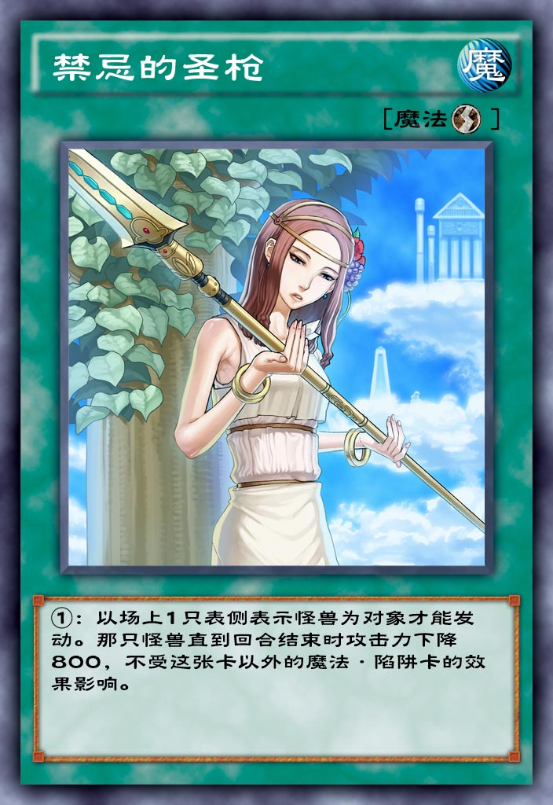

| 中文名 | 禁忌的圣枪 |  |
| 日文名 | 禁じられた聖槍 | |
| 英文名 | Forbidden Lance | |
| 卡片种类 | 魔法 速攻 | |
| 数据库编号 | 9352 | |
| 使用限制 | 无限制 | |
| 种族 | ||
| 属性 | ||
| 星级 | ||
| 攻击力 | ||
| 防御力 | ||
| 罕见度 | 超凡 | |
| 获取方式 | 钻石星尘 | |
| 字段 | ||
| 链接 | ||
百鸽 Yu-Gi-Oh! Wikia |
||
| 效果 | ||
①：以场上1只表侧表示怪兽为对象才能发动。那只怪兽直到回合结束时攻击力下降800，不受这张卡以外的魔法·陷阱卡的效果影响。 |
||
| 调整 | ||
[禁忌的圣枪] <禁じられた聖槍> [2011/03/20] ●选择场上表侧表示存在的1只怪兽发动。直到结束阶段时，选择的怪兽的攻击力下降800，不受这张卡以外的魔法·陷阱卡的效果影响。 ◇伤害步骤中在伤害计算时之前可以发动。 ◇取对象效果。 ◇可以选择攻击力不足800的怪兽作为效果的对象。那个怪兽攻击力变成0，并且不受这张卡以外的魔法·陷阱卡的效果影响。 ◇可以选择攻击力为0的怪兽作为效果的对象。那个怪兽攻击力仍是0，并且不受这张卡以外的魔法·陷阱卡的效果影响。 ◇「青眼白龙/青眼の白龍」因为「收缩/収縮」的效果攻击力变成1500的场合，因为这张卡的效果攻击力变成700并且不受这张卡以外的魔法·陷阱卡的效果影响后，攻击力仍为700。 ◇这张卡的效果适用中的对象不能因为含有融合召唤的卡的效果作为融合素材怪兽。 ◇这张卡的效果适用中的对象不能因为含有仪式召唤的卡的效果作为仪式素材而解放。 ◇这张卡的效果适用中的对象发动效果时被对应其发动「天罚/天罰」的场合，其发动及效果不会被无效且不会被「天罚/天罰」的效果破坏。 ◇可以以这张卡效果适用中的怪兽为对象发动魔法·陷阱卡。 ◇因为「未来融合/未来融合－フューチャー·フュージョン」的效果特殊召唤的怪兽在这个效果适用中，「未来融合/未来融合－フューチャー·フュージョン」被破坏的场合，那个怪兽也不会被破坏。 ◇装备有「武器手套/アームス·エイド」的怪兽适用这张卡的效果后，那个「武器手套/アームス·エイド」仍作为装备卡装备，但是在这张卡的效果结束前不会让那只怪兽的攻击力上升，那只怪兽战斗破坏对方怪兽后也不会给与效果伤害。 |
||
| 笔记 | ||
1. 在当前的环境(2022年7月5日, 5DS初期), 这张卡的主要作用是让初动非常重要的卡组不要吃坑死, 是「无底的落穴」「加拿大虫」「雷破」的对策卡。 常见于后手OTK型的卡组, 如「空牙团」或者「甲虫装机」。 参考构筑1: 2022-6月决斗王邀请赛冠军卡组-空牙团 参考构筑2: 2022-5月决斗王邀请赛四强卡组-甲虫装机 2. 不受这张卡以外的魔法·陷阱卡的效果影响, 是不论己方还是对方、正面还是负面效果的。即便是高手也会犯下给适用过「禁忌的圣枪」的怪兽加攻的渣操作。◇可以以这张卡效果适用中的怪兽为对象发动魔法·陷阱卡。3. 「禁忌的圣枪」还可以打断融合召唤和仪式召唤。比如当前环境常见的外挂「黑魔导骑兵」小轴的「黑魔导」卡组，「电子天使」卡组等等。◇这张卡的效果适用中的对象不能因为含有融合召唤的卡的效果作为融合素材怪兽。 ◇这张卡的效果适用中的对象不能因为含有仪式召唤的卡的效果作为仪式素材而解放。4. 「禁忌的圣枪」可以连锁对方的魔法·陷阱卡发动, 所以常说风会吹错, 但是圣枪不会。但是「禁忌的圣枪」不能连锁反击陷阱卡发动。 5. 「禁忌的圣枪」还有改变攻击力的效果，所以可以进伤判阶段发动，比如连锁「银幕的镜壁」发动。 6. 「禁忌的圣枪」可以只使用它降低攻击力的效果，当成一个单体的「分断之壁」。 参考链接 1. 2022年 5月决斗王邀请赛 四强卡组分享 2. 2022年 6月决斗王邀请赛 四强卡组分享 |
||
{kind=link}
{kind=link}